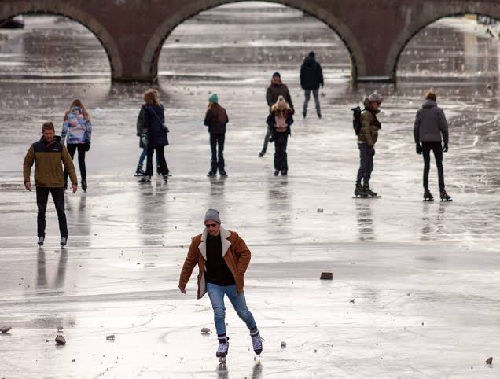
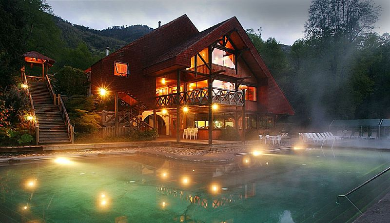
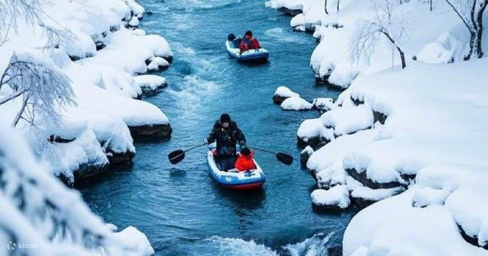
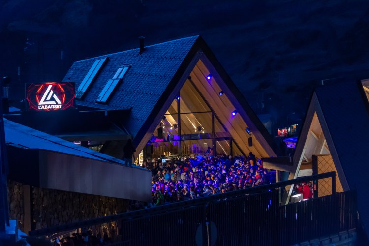
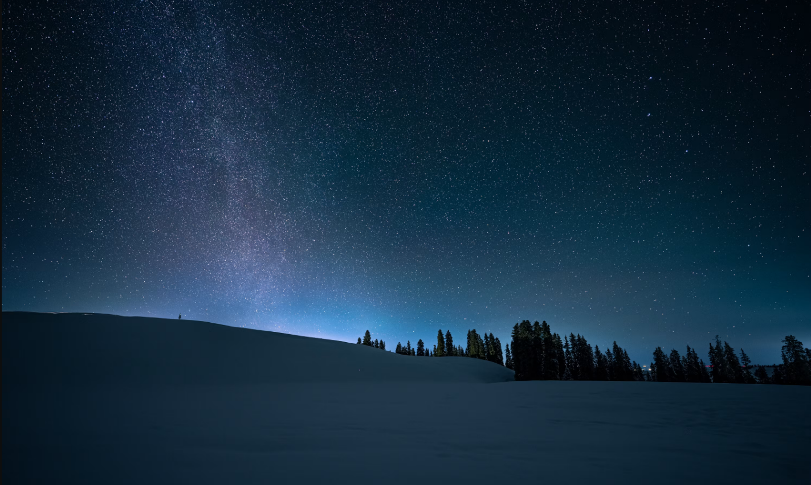
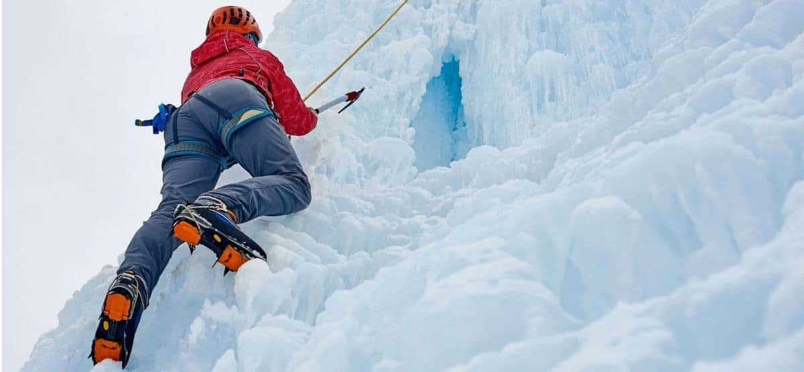

⛸️Patinaje sobre Hielo
Pista ecológica al aire libre, arriendo de patines y cafetería.
Descubre las 6 actividades y experiencias imperdibles de Destino Cordillera:

⛸️Pista ecológica al aire libre, arriendo de patines y cafetería.

♨️Pozones de agua volcánica rica en minerales para el descanso.

🛶Rápidos clase III y IV con guías certificados y equipo completo.

🔥Fogatas comunitarias, música acústica en vivo y veladas típicas.

🔭Sesión guiada con telescopios bajo cielos limpios de montaña.

🧗Ascenso en murallones naturales de granito para todos los niveles.